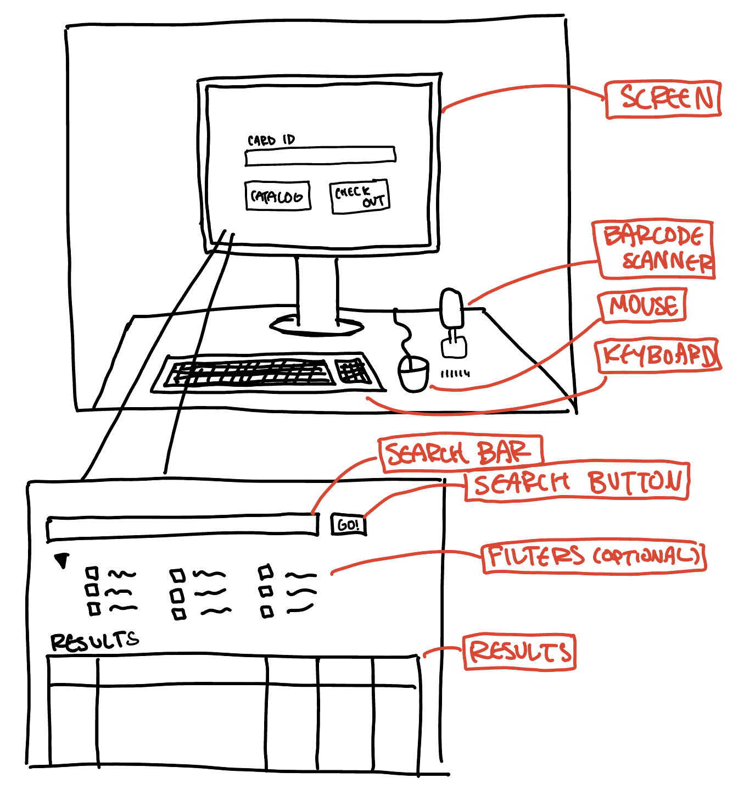
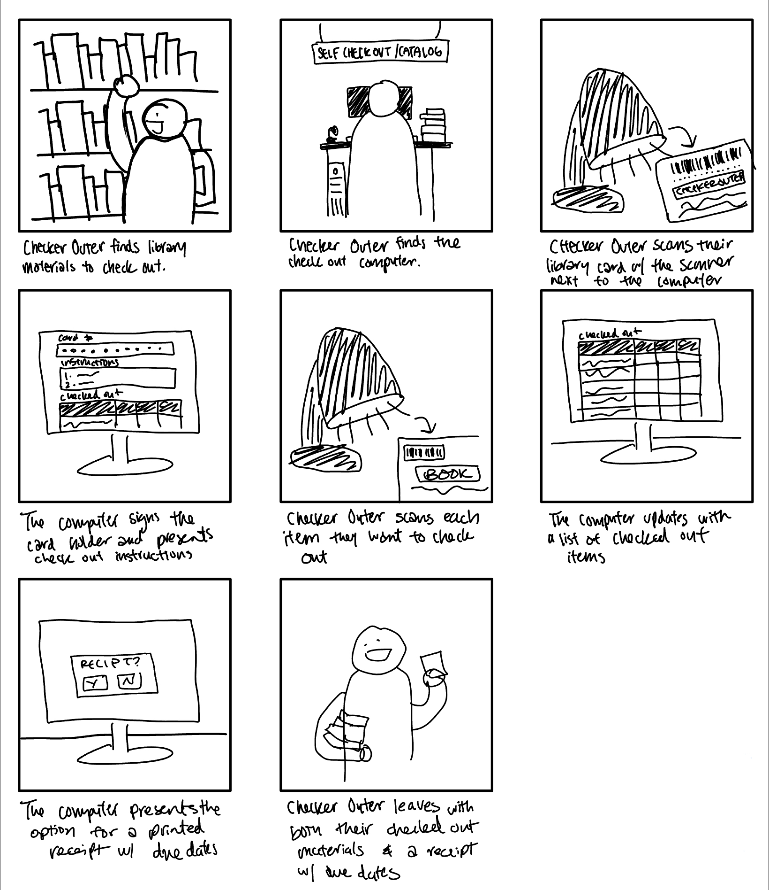

Personas and Storyboards: Library Checkout/Catalog Computer
Part 1: Preparation
- Accessible interface: public library catalogue computer
- Questions for users regarding experience with interface:
- What kind of materials are you looking to check out?
- Did you experience any frustrations or confusions using the interface to check out?
- How much time did it take for you to check out your items?
- Did you need to ask anyone for help to check out your items?
- How easy was it to search for your item's availability?
- How easy was it to navigate to your item within the library?
Sketch

Brief description: The public library catalogue computer gives library visitors a chance to locate the item they're looking for on their own by browsing the library's database. Connected to a barcode scanner, keyboard, and mouse, they can sign in through their library card, filter through various categories to narrow their search, and be put on a waitlist for unavailable items. Since this library is a part of a network of libraries, this search can also apply to libraries outside of the one they're using.
Part 2: Recording Observations
Person 1
- Older man, carrying three books and two DVDs. Scanned books first, prompted with message to scan card first. Reacted with confusion before pulling card out. Squinted to read the words on the screen, didn't click the “enlarge”/”zoom” button. Tried to scan card before scanning each book/DVD. Computer software didn't recognize card as valid. Reacted with frustration. Had to write the due date on separate slip of paper in his pocket.
- Response to questions
- checking out three books and two DVDs took 15 minutes, but the computer was confusing to use because it didn't present a sequence of steps to take
- the software was difficult to read and the options to make it easier to read is not accessible enough since it wasn't labelled
- constraints on what kind of materials the barcode scanner could scan based on what step of the checkout process it's on
Person 2
- Pre-teen boy, searched the title he was looking for in the initial screen's card id and was presented with “user not found” error, eventually clicked catalog and searched for the title. it was available in the building, but he vocalized trouble with identifying location listed. left and came back twice to check the location again.
- Response to questions
- looking for a video game, but it took about 20 minutes, and regretted not asking a librarian who could find it easier and faster
- confused as to why the checkout process and the lookup process is on the same computer with confusing instructions
- confused as to why the location listed on the screen isn't more understandable to non-librarians and wished it could show a map of the library with the location highlighted
Person 3
- mom with two younger daughters, trying to figure out what book they wanted to get, confusion over what the book name was but daughters couldn't verify from title because the computer was on a table that was too tall. ended up asking librarian.
- Response to questions
- no issue with the actual interface itself (used it many times in the past), but couldn't ask daughters if the results were what they wanted because they were too short
- took too long to try to use it with her daughters, so she asked a librarian to deal with that process instead
Part 3: Personas
Persona 1: Checker-Outer
- Checker-Outer is an older patron of the library that often checks out multiple items at a time. Usually, they'll interact with a librarian, but it's a super busy day, and the line for them is longer than desired, so Checker-Outer will opt for the self checkout instead.
- The interface problems involve a lack of a clear set of instructions for how to checkout materials.
- This represents users of the public library catalogue computer because it facilitates one of the primary functions of the library, which is to check out materials. The demographic of Checker-Outer is also representative of those who often go to the library and wants to check out physical materials.
THINKS
I'm excited to read this book and watch this movie tonight!
I wish the words were bigger and easier to read
Why is this taking so long?
FEELS
frustrated that the computer doesn't print out a receipt
confused about how to check out books
panicked about navigating all the error messages
SAYS
What does that say?
Stupid machine won't do what I want
Do I scan my card each time?
DOES
Forgets to bring library card out
Writes due date on a blank slip of paper
leaves without logging out of account
Persona 2: Searcher
- Searcher is a younger patron of the library that is looking for something specific in the library. They don't normally use the library, and they don't want to talk to anyone and would prefer to find the material themselves, quickly.
- The interface problems involve not knowing how to read the internal library's location naming conventions after searching for the desired material.
- This represents users of the public library catalogue computer because it facilitates one of the other primary functions of the library, which is to find materials. The demographic of Searcher is also representative of those who don't often go to the library, yet wants to access the physical materials it offers.
THINKS
I want to play the new video game tonight!
I haven't been here in so long—where is the video game room?
This computer looks so old
FEELS
confused about how to read the location information and navigate there
annoyed that they've gotten lost multiple times already
dread about potentially having to ask librarian for help
happy that their intended material are available
SAYS
Where is that?
Do I need my card for this?
DOES
tries to find room where the material is located
searches for item through library catalog
Part 4: Storyboards
